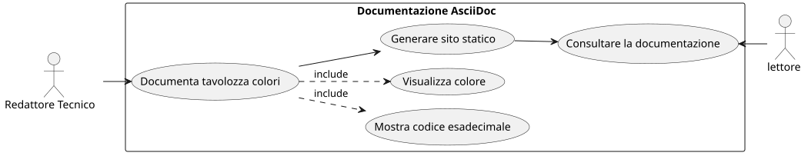
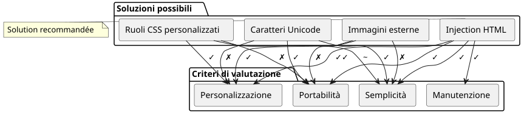
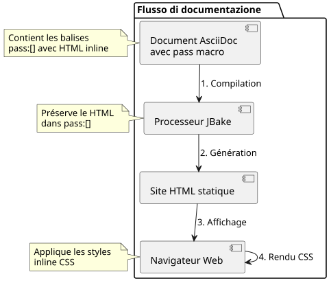

Visualizzare quadrati colorati in AsciiDoc: Guida pratica
Publié le 01 November 2025
Introduzione
Durante la redazione di documentazione tecnica, in particolare per guide di stile o specifiche di interfaccia utente, è frequente dover visualizzare palette di colori. AsciiDoc, nonostante sia molto potente per la documentazione, non propone una sintassi nativa per visualizzare esempi di colore. Questo articolo esplora la problematica e propone una soluzione elegante basata sull’iniezione HTML.
La problematica
Contesto di utilizzo
Immaginiamo che voi documentiate le variabili CSS di un tema di un’applicazione web. Avete bisogno di :
-
Elencare i codici colori esadecimali
-
Mostra un’anteprima visiva di ogni colore
-
Maintenir la lisibilité du document source
-
Assicurare la compatibilità con i generatori di siti statici come JBake

Gli approcci possibili
Diversi approcci possono essere considerati per visualizzare i colori in un documento AsciiDoc :

Opzione 1 : Caratteri Unicode
L’utilizzo di caratteri Unicode come`■`(■) è semplice ma limitata :
* ■ --accent-color: #7952b3 (violet Bootstrap)Limitazioni : Nessun controllo sul colore, dipende dal carattere di sistema.
Opzione 2: Immagini esterne
Creare immagini PNG o SVG per ogni colore :
* image:colors/violet.svg[width=16] --accent-color: #7952b3Limitazioni : Manutenzione pesante, moltiplicazione dei file, nessuna sincronizzazione automatica.
Option 3 : Ruoli CSS personalizzati
Definire le classi CSS e applicarle tramite i ruoli AsciiDoc :
* [.color-violet]##■## --accent-color: #7952b3Limitazioni : Richiede un foglio di stile esterno, definizione preliminare di tutti i colori possibili.
Opzione 4 : Iniezione HTML (soluzione adottata)
Utilizzare la macro``per iniettare HTML con stili inline :
* pass:[<span style="display:inline-block;width:1em;height:1em;
background:#7952b3;vertical-align:middle;margin-right:0.5em"></span>]
--accent-color: #7952b3 (violet Bootstrap)La soluzione : Iniezione HTML con
Principio di funzionamento
La macro``d’AsciiDoc permette di inserire contenuto grezzo che non verrà interpretato dal processore AsciiDoc. Questo ci permette di iniettare direttamente HTML con stili CSS inline.
Failed to generate image: PlantUML preprocessing failed: [From <input> (line 2) ] @startuml participant "documento ^^^^^ Syntax Error? (Assumed diagram type: sequence) @startuml participant "documento AsciiDoc" as doc participant "processore AsciiDoc" as processor participant "pass:[] macro" as pass participant "HTML finale" as html doc -> processor : Analyse document processor -> pass : Détecte pass:[] pass -> processor : Retourne HTML brut processor -> html : Insère sans transformation html -> html : Navigateur applique styles @enduml
Implementazione
Ecco la struttura HTML da iniettare:
<span style="display:inline-block;
width:1em;
height:1em;
background:#7952b3;
vertical-align:middle;
margin-right:0.5em">
</span>Spiegazione delle proprietà CSS
| Proprietà | Funzione |
|---|---|
|
Permette di impostare width/height rimanendo nel flusso inline |
|
Dimensione del quadrato relativa alla dimensione del carattere (responsive) |
|
Il colore da visualizzare (variabile secondo le tue esigenze) |
|
Allinea il quadrato con il testo adiacente |
|
Spaziatura tra il quadrato e il testo |
Esempio completo
Ecco un esempio che documenta una paletta di tema:
== Thème Clair
* pass:[<span style="display:inline-block;width:1em;height:1em;background:#f8f9fa;border:1px solid #ccc;vertical-align:middle;margin-right:0.5em"></span>] --bg-primary: `#f8f9fa` (blanc cassé)
* pass:[<span style="display:inline-block;width:1em;height:1em;background:#212529;vertical-align:middle;margin-right:0.5em"></span>] --text-primary: `#212529` (noir très foncé)
* pass:[<span style="display:inline-block;width:1em;height:1em;background:#7952b3;vertical-align:middle;margin-right:0.5em"></span>] --accent-color: `#7952b3` (violet Bootstrap)
* pass:[<span style="display:inline-block;width:1em;height:1em;background:#61428f;vertical-align:middle;margin-right:0.5em"></span>] --accent-hover: `#61428f` (violet plus foncé)
* pass:[<span style="display:inline-block;width:1em;height:1em;background:#ffffff;border:1px solid #ccc;vertical-align:middle;margin-right:0.5em"></span>] --card-bg: `#ffffff` (blanc)Chi produce il rendering seguente :
Tema chiaro
-
--bg-primary:`#f8f9fa`(bianco avorio)
-
--text-primary:`#212529`(nero molto scuro)
-
--accent-color:`#7952b3`(viola Bootstrap)
-
--accent-hover:`#61428f`(viola più scuro)
-
--card-bg:`#ffffff`(bianco)
Ottimizzazioni e buone pratiche
Gestire i colori chiari
Per i colori molto chiari (bianco, grigio molto chiaro), aggiungi un bordo per renderli visibili su sfondo bianco :
<span style="display:inline-block;width:1em;height:1em;
background:#ffffff;border:1px solid #ccc;
vertical-align:middle;margin-right:0.5em"></span>Il bordo grigio (border:1px solid #ccc) permette di delimitare il quadrato bianco su uno sfondo bianco.
Adatta la dimensione dei quadrati
Puoi regolare la dimensione dei quadrati in base alle tue esigenze :
* pass:[<span style="display:inline-block;width:1.5em;height:1.5em;background:#7952b3;vertical-align:middle;margin-right:0.5em"></span>] Grand carré
* pass:[<span style="display:inline-block;width:0.8em;height:0.8em;background:#7952b3;vertical-align:middle;margin-right:0.5em"></span>] Petit carréL’utilizzo dell’unità`em`garantisce che i quadrati si adattino alla dimensione del carattere.
Creare varianti
Per esigenze specifiche, puoi creare diverse forme :
Cerchio colorato
* pass:[<span style="display:inline-block;width:1em;height:1em;background:#7952b3;border-radius:50%;vertical-align:middle;margin-right:0.5em"></span>] Cercle violetQuadrato con bordo colorato
* pass:[<span style="display:inline-block;width:1em;height:1em;background:#ffffff;border:3px solid #7952b3;vertical-align:middle;margin-right:0.5em"></span>] Bordure violetteArchitettura della soluzione

Vantaggi e limitazioni
Vantaggi
-
✓ Autonomie : Pas de dépendance à des fichiers externes
-
✓ Portabilità : Funziona con tutti i processori AsciiDoc
-
�✓ Sincronizzazione : Il codice colore è direttamente nell’HTML
-
✓ Flessibilità : Personalizzazione completa dello stile
-
�✓ Manutenzione : Modifica semplice del codice esadecimale
-
�✓ Compatibilità JBake : Funziona perfettamente con i generatori di siti statici
Limitazioni
-
Verbosità : Codice HTML ripetitivo nel sorgente AsciiDoc
-
✗ Leggibilità fonte : Il documento sorgente è meno pulito
-
�✗ Accessibilità : Nessun testo alternativo nativo (da aggiungere manualmente)
Miglioramento dell’accessibilità
Per rendere i quadrati accessibili ai lettori di schermo:
* pass:[<span role="img" aria-label="Couleur violet Bootstrap"
style="display:inline-block;width:1em;height:1em;background:#7952b3;
vertical-align:middle;margin-right:0.5em"></span>]
--accent-color: `#7952b3` (violet Bootstrap)Gli attributi`role="img"` et `aria-label`consentono alle tecnologie assistive di comprendere e descrivere il contenuto visivo.
Esempio concreto: Documentazione dei temi
Ecco un esempio completo documentante diversi temi:
= Guide des couleurs de l'application
== Thème Clair (`:root`)
* pass:[<span style="display:inline-block;width:1em;height:1em;background:#f8f9fa;border:1px solid #ccc;vertical-align:middle;margin-right:0.5em"></span>] --bg-primary: `#f8f9fa` (blanc cassé)
* pass:[<span style="display:inline-block;width:1em;height:1em;background:#212529;vertical-align:middle;margin-right:0.5em"></span>] --text-primary: `#212529` (noir très foncé)
* pass:[<span style="display:inline-block;width:1em;height:1em;background:#7952b3;vertical-align:middle;margin-right:0.5em"></span>] --accent-color: `#7952b3` (violet Bootstrap)
== Thème Sombre (`[data-bs-theme="dark"]`)
* pass:[<span style="display:inline-block;width:1em;height:1em;background:#212529;vertical-align:middle;margin-right:0.5em"></span>] --bg-primary: `#212529` (noir très foncé)
* pass:[<span style="display:inline-block;width:1em;height:1em;background:#ffffff;border:1px solid #999;vertical-align:middle;margin-right:0.5em"></span>] --text-primary: `#ffffff` (blanc)
* pass:[<span style="display:inline-block;width:1em;height:1em;background:#0d6efd;vertical-align:middle;margin-right:0.5em"></span>] --accent-color: `#0d6efd` (bleu Bootstrap)
== Thème Contraste Élevé (`[data-bs-theme="high-contrast"]`)
* pass:[<span style="display:inline-block;width:1em;height:1em;background:#000000;vertical-align:middle;margin-right:0.5em"></span>] --bg-primary: `#000000` (noir)
* pass:[<span style="display:inline-block;width:1em;height:1em;background:#ffffff;border:1px solid #000;vertical-align:middle;margin-right:0.5em"></span>] --text-primary: `#ffffff` (blanc)
* pass:[<span style="display:inline-block;width:1em;height:1em;background:#00ff00;vertical-align:middle;margin-right:0.5em"></span>] --accent-color: `#00ff00` (vert vif)Conclusione
L’iniezione HTML tramite la macro``d’AsciiDoc offre una soluzione elegante e pratica per visualizzare dei campioni di colore nella documentazione tecnica. Sebbene leggermente verbosa, questo approccio garantisce una portabilità massima e una manutenzione semplificata.
Questa tecnica non richiede alcuna configurazione esterna, alcun foglio di stile aggiuntivo, e funziona immediatamente con JBake e tutti i processori AsciiDoc standard.
Una volta che hai creato il tuo primo quadrato colorato, basta copiare e incollare il codice HTML e modificare il codice esadecimale per creare rapidamente una palette completa.
Questa tecnica può essere estesa ad altri casi d’uso che richiedono un rendering visivo personalizzato: icone, badge, grafici semplici, o qualsiasi elemento visivo che richieda un controllo preciso dello stile.
Risorse
Articolo pubblicato il 2025-11-01
Articoli correlati
14 May 2026